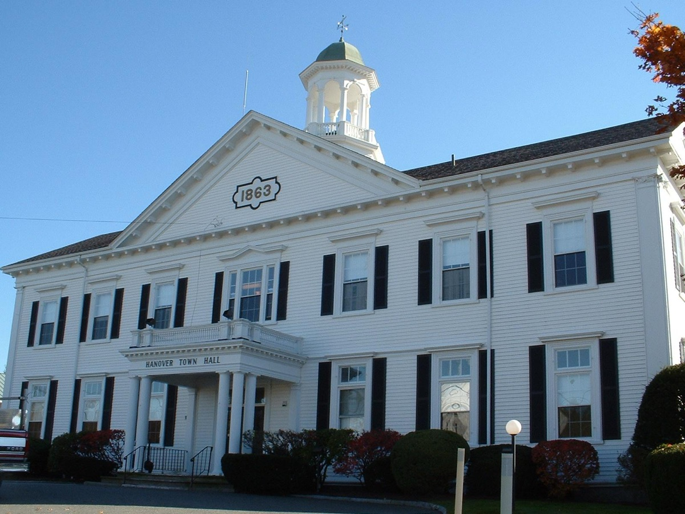
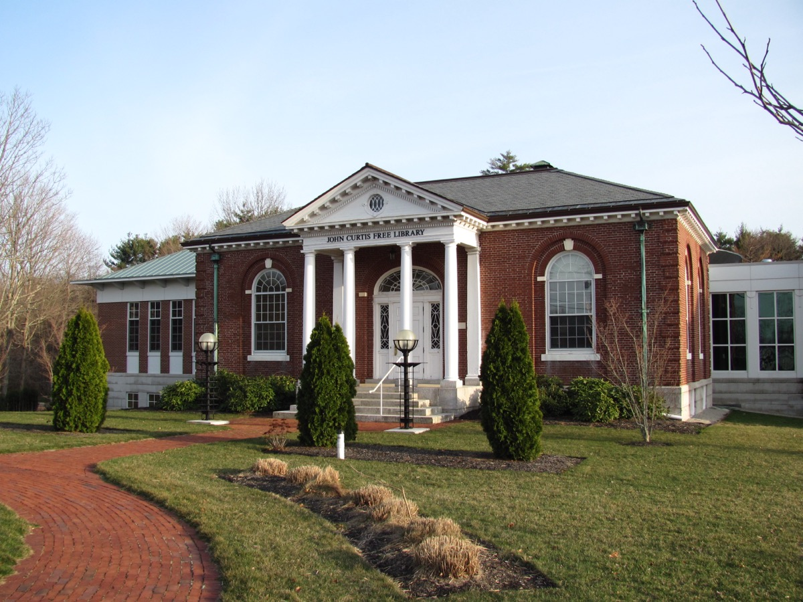

Independent community water quality initiative
We track EPA and MassDEP data for the Hanover Water Department's three groundwater treatment plants and help Hanover families understand what's really coming out of the tap — in plain language, sourced from public records.
Hanover draws 100% of its public water supply from local groundwater wells, treated at three town-owned plants — Beal, Pond Street, and Broadway — originally built to solve a very local problem: naturally occurring iron and manganese that turn untreated well water cloudy, rust-colored, and metallic-tasting.
Those same three plants are now also the town's front line against PFAS ("forever chemicals"). Hanover's Pond Street plant exceeded the Massachusetts PFAS6 standard in 2021 and again in 2023. The town added granular-activated-carbon (GAC) filtration in response, and as of its most recent public reporting, the system is meeting the state's 20 parts-per-trillion standard. In May 2026, Hanover voters approved $32 million to upgrade all three plants ahead of a stricter federal PFOA/PFOS limit the EPA has proposed extending compliance deadlines for.
| Standard | Limit | Hanover's status |
|---|---|---|
| MA PFAS6 (sum of 6 compounds) | 20 ppt | Met as of latest public reporting; exceeded at Pond Street in 2021 & 2023 |
| EPA PFOA / PFOS (individual) | 4 ppt each | Not yet enforced (2029 deadline); town investing ahead of it |
ppt = parts per trillion. Sources: Hanover Water Department PFAS public notices (2021, 2023); Town of Hanover May 2026 Annual Town Meeting warrant. Full breakdown on the Water data page.


Hanover Water Watch is a volunteer-run initiative started by residents who wanted a plain-language, independent source for what public testing actually shows about the town's water supply — separate from the Water Department's own reporting, and separate from the debate around the town's recent $32 million treatment vote.
We read the public notices and Consumer Confidence Reports so you don't have to, track new PFAS results as they're published, and help neighbors figure out whether their household should be doing anything differently in the meantime.
Request a free in-home water test and a volunteer will follow up to walk through what your results mean.
Get a free water test